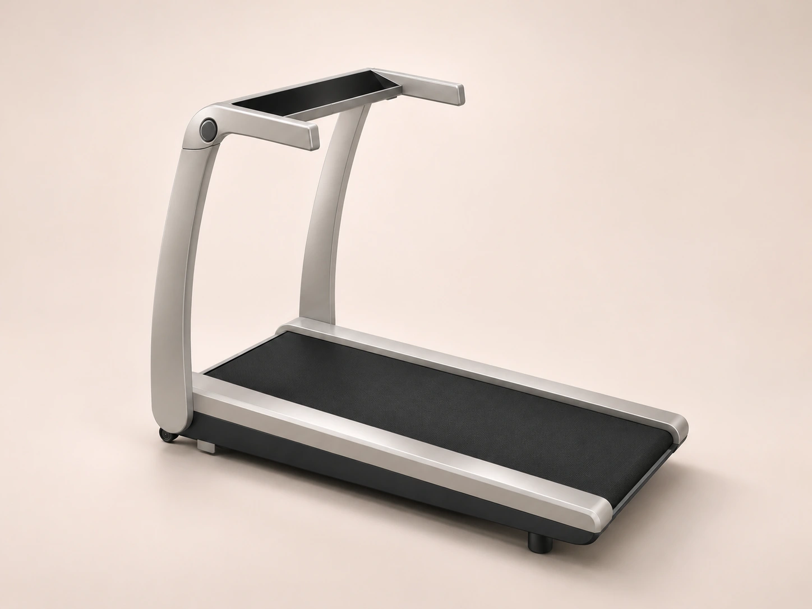
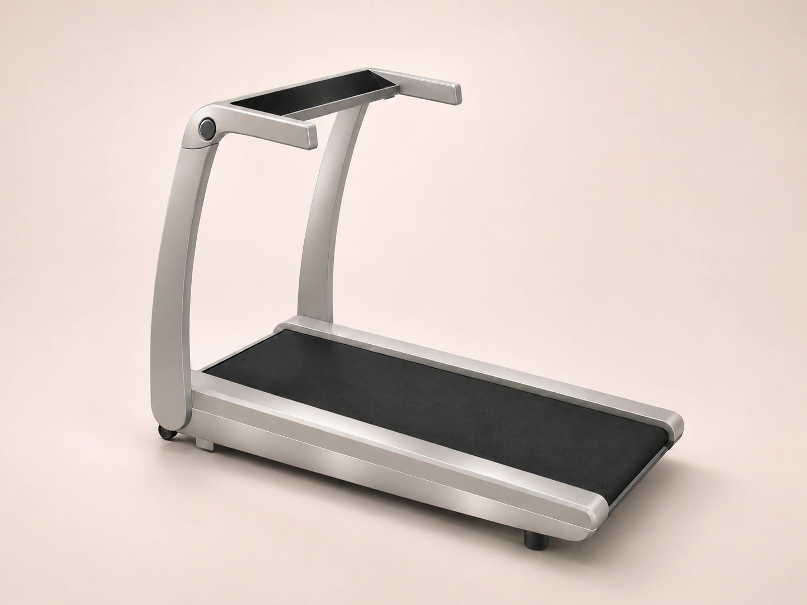
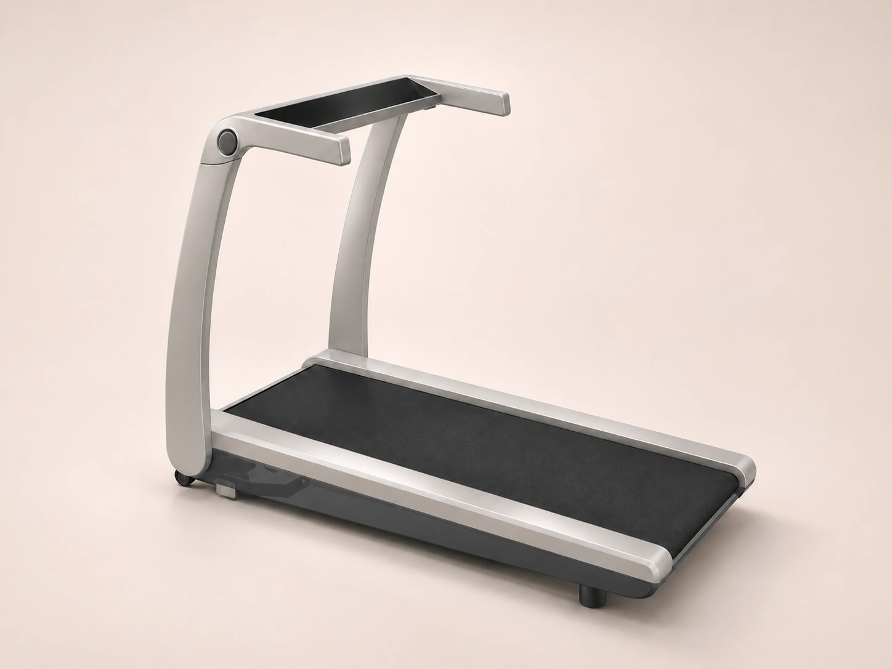

<script id="xinghu-long-grip-route">if(!new URLSearchParams(location.search).has("history"))location.replace("../xinghu-long-grip-20261115/"+location.search+location.hash);</script><!doctype html><html lang="zh-CN"><meta charset="utf-8"><meta name="viewport" content="width=device-width,initial-scale=1"><title>星弧 · 产品效果图</title><style>*{box-sizing:border-box}body{margin:0;background:#f8f6f2;color:#242422;font:18px/1.6 Arial,"PingFang SC",sans-serif}main{max-width:1280px;margin:auto;padding:48px 32px}h1{font-size:42px;font-weight:500;margin:0}header p{color:#73706a}nav{display:flex;gap:24px;flex-wrap:wrap;margin:24px 0}a{color:inherit}section{margin:56px 0 80px;scroll-margin-top:20px}.label{display:flex;justify-content:space-between;align-items:baseline;gap:20px}h2{font-size:27px;font-weight:500}.label p{font-size:17px;color:#73706a}img{display:block;width:100%;height:auto}.status{font-size:13px;color:#88857f}footer{font-size:14px;color:#73706a}@media(max-width:700px){main{padding:26px 16px}h1{font-size:32px}.label{display:block}h2{margin-bottom:4px}.label p{margin-top:0}section{margin-top:35px}}</style><main><header><h1>星弧</h1><p>三套CMF · 已补上端转轴内凹解锁按钮</p><nav><a href="#A">A 深石墨</a><a href="#B">B 暖银拉丝</a><a href="#C">C 烟灰半透</a></nav></header><section id="A"><div class="label"><h2>A｜深石墨铝板</h2><p>细喷砂与深灰金属效果</p></div><a href="A-graphite-v2.webp" target="_blank"></a><p class="status">AI产品效果提议 · STEP截图参考 · 按钮外观提议 · 待评审</p></section><section id="B"><div class="label"><h2>B｜暖银拉丝铝板</h2><p>温暖银色与细腻拉丝</p></div><a href="B-warm-silver-v2.webp" target="_blank"></a><p class="status">AI产品效果提议 · STEP截图参考 · 按钮外观提议 · 待评审</p></section><section id="C"><div class="label"><h2>C｜深灰半透明塑料</h2><p>完整烟灰罩壳，隐约透出内部</p></div><a href="C-smoke-v2.webp" target="_blank"></a><p class="status">AI产品效果提议 · STEP截图参考 · 按钮外观提议 · 待评审</p></section><footer><a href="../#poxing">返回星弧整机评审 ↗</a>　<a href="../xinghu-cmf-native-20261115/viewer.html?rev=cmf-controls-fixed">查看原STEP材质分区 ↗</a></footer></main></html>